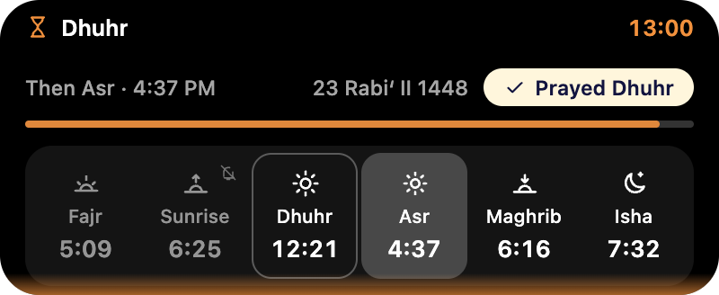
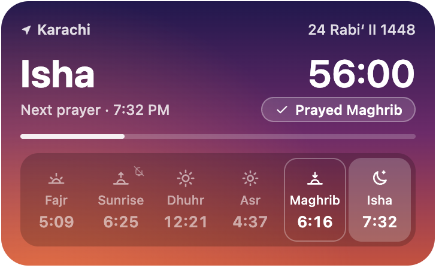

Always there, never in the way
Next to the notch or in the tray, a small island shows the next prayer and the time left. Point at it for the whole day.


The adhan, at each prayer
Recorded at Masjid an-Nabawi in Madinah, or choose your own audio file. Optional reminders before each time.
Times you can trust
Eleven calculation methods, Hanafi or standard Asr, and a time field for every prayer to match your local mosque.
Mark it prayed
One tap on Prayed. If a prayer is running out, the colours warm from gold to red and a quiet cover reminds you.
Yours to keep
Free, with no account and no ads. Open source under the MIT licence.
Download Namaz
Free. Pick your computer. It takes a minute.
For Mac
Download for Mac- Open the downloaded file.
- Drag Namaz onto Applications.
- Open Namaz. The first time, Mac will ask you to confirm: see the two quick steps.
For Windows
Download for Windows- Run the downloaded installer. It needs no administrator password.
- If Windows says it protected your PC, click More info, then Run anyway.
- Open Namaz from the Start menu and look for its icon by the clock.
Older versions and release notes are on GitHub.
If Namaz won't open
This is normal the first time. Namaz is free and is not signed with a paid developer account, so Mac and Windows ask you to confirm once. It is safe, and you won't be asked again.
On a Mac
- Open Namaz. When your Mac says it can't verify the app, click Done. Don't click Move to Trash.
- Open System Settings, then Privacy & Security, and scroll to the bottom.
- Next to the note that Namaz was blocked, click Open Anyway, then enter your password or use Touch ID.
- Open Namaz again. That's it.
There is no "Open Anyway" button
Try opening Namaz once more, then go back to Privacy & Security. The button only appears for a little while after your Mac blocks the app.
Still nothing? Use the quick way. Open Terminal (press ⌘ Space, type Terminal, press Return), paste this line, and press Return:
xattr -dr com.apple.quarantine /Applications/Namaz.appThen open Namaz as usual. The line only removes the "downloaded from the internet" flag.
It says Namaz "is damaged and can't be opened"
It isn't damaged. This is the same block in another form. Use the Terminal line above and open Namaz again.
The downloaded disk image won't open
Clear the flag from the download, then open it again. In Terminal:
xattr -d com.apple.quarantine ~/Downloads/Namaz-*.dmgIt opened, but I can't see it
Look for the moon icon in the menu bar at the top, and for a small black island at the top of the screen. Opening Namaz again from Applications brings up its Settings.
The times are for the wrong city
Allow Namaz to use your location in System Settings, Privacy & Security, Location Services. Or open Namaz's Settings, go to General, and choose your city.
I don't hear the adhan
In Namaz's Settings, open Alarms and press Test Alarm, and check your Mac's volume. The alarm rings only while your Mac is awake and Namaz is running, so turn on Open Namaz at login in General.
My Mac belongs to work or school
The administrator may have turned off opening apps that are not from the App Store. Only they can allow it.
On Windows
Windows protected your PC
Click More info, then Run anyway. You only have to do this once. If your browser warns about the download, choose to keep it.
I can't find Namaz after installing
Open it from the Start menu. Its icon sits in the tray by the clock, and may be behind the small arrow that shows hidden icons. Click the icon for the timetable.
A full-screen cover appeared and I need my screen back
Namaz covers the screen in the last ten minutes of a prayer you haven't marked. Press and hold Prayed for three seconds, or press Ctrl Alt Q to quit Namaz. On a Mac, ⌘ Q does the same.
Something else? Tell us on GitHub.